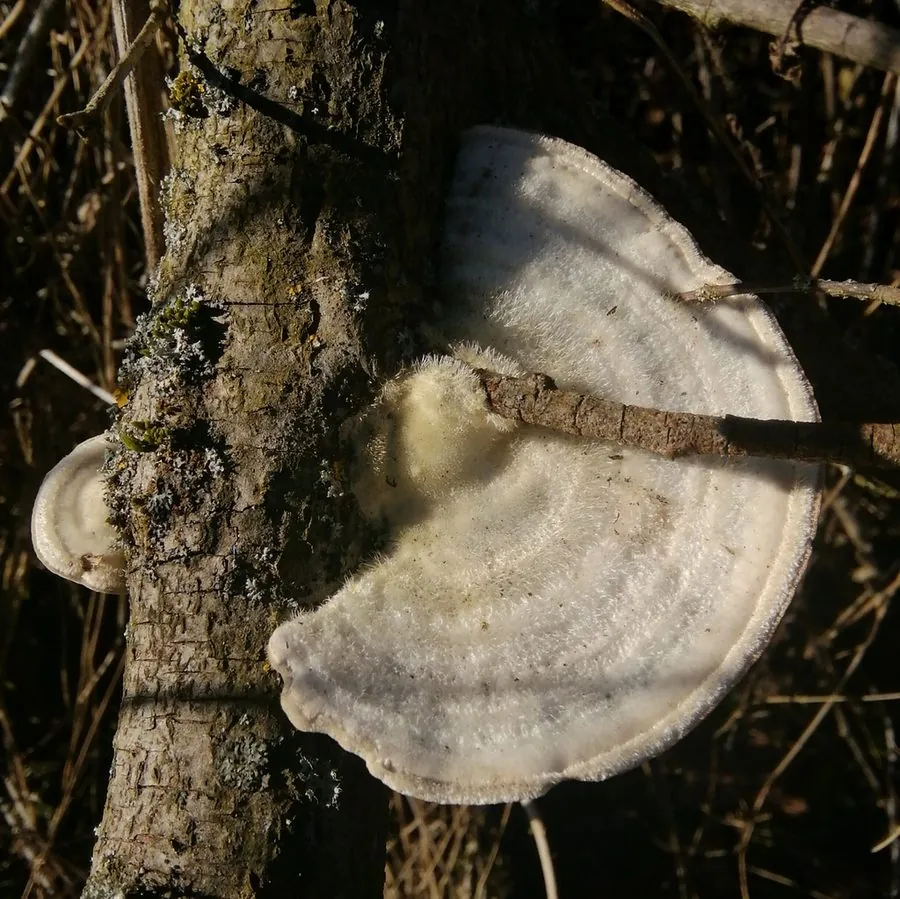

真菌 · 真菌界
毛栓菌 Trametes hirsuta

多孔菌科栓菌属一年生木腐菌，菌盖密被灰白色粗毛、具环纹，生于阔叶树枯木，引起白色腐朽，不可食用。
- 分类
- 门担子菌门纲伞菌纲目多孔菌目科多孔菌科属栓菌属
- 栖息环境
- 温带与亚热带阔叶林，生于杨、柳、栎等枯木，引起白色腐朽
- 地理分布
- 世界温带与亚热带广布，中国南北林区常见
- 保护级别
- IUCN 暂无评估；分布广，种群稳定
物种志
毛栓菌的子实体一年生，革质至木栓质，菌盖半圆形至扇形，宽 3–10 厘米，表面灰白色至淡黄褐色，密被粗毛并具同心环纹，边缘薄而锐。菌肉白色至淡黄色；菌管单层，孔口圆形至多角形，灰白色至淡黄色。孢子印白色，孢子圆柱形，光滑无色。
本种分布于世界温带与亚热带，生于杨、柳、栎等阔叶树的枯木与倒木上，引起木材白色腐朽。它生长迅速，常在枯木上层层叠叠地生长。毛栓菌革质坚韧，不可食用；它能分泌漆酶，在生物修复与染料脱色研究中被广泛应用，是白腐真菌中的模式种类之一。在实验室里，它常被用来研究木质素降解、染料脱色与土壤修复。它还参与森林枯木的碳循环。
形态与习性
- 菌盖半圆形，宽 3–10 厘米，密被粗毛
- 菌管单层，孔口灰白色至淡黄色
- 孢子印白色，孢子圆柱形
- 生境阔叶树枯木与倒木，引起白色腐朽
- 食用性革质坚韧，不可食用
- 科研价值分泌漆酶，用于生物修复研究
趣味知识
- 毛栓菌的菌盖表面密被灰白色粗毛，摸上去像粗糙的毛毡。
- 它能分泌漆酶，可降解木质素与多种污染物，是生物修复研究的常用菌。
- 毛栓菌常层层叠叠地长在枯木上，形成瓦片状的菌盖群。
- 它属于白腐真菌，分解木材时留下浅色的纤维素，因此叫“白色腐朽”。